Прокачка войск
Одной из важных частей игры является прокачка войск. Первое и самое важное - нельзя качать все войска равномерно! Без очень большого доната это лишь потраченные впустую ресурсы (усилители, осколки, дары святой и ресурсы на технологии), которые крайне ограничены.Моноотряды рулят: вкладываясь в один конкретный тип войск достичь хороших статов без вливавания денег возможно, поэтому важно, чтобы весь ваш марш состоял из того типа войск, который вы качаете.
Теперь к выбору войск. Всего есть три типа: пехота (пехи), стрелки и наездники (наезды) (транспорт исполняет только роль собирателя ресурсов, его качать не надо!). У каждого типа есть свои сильные и слабые стороны.
Пехота
Этот тип войск очень хорошо показывает себя в атаке на других игроков и в защите от них. Эти юниты получают урон первыми, но с хорошей прокачкой их сложно пробить. Имеют слабость к наездником (то есть наездники наносят пехоте больший урон, нежели стрелки при прочих равных). Сложность прокачки - тяжёлая.
Наездники
Этот тип войск немного более распространён среди игроков. Одинаково хорошо наносят урон как и в атаках на квилл/падших, так и в атаках на других игроков. Эти юниты имеют самую быструю скорость передвижения по карте и получают урон вторыми. Имеют слабость к стрелкам. Сложность прокачки - лёгкая.
Стрелки
Самый распространнёный тип войск среди игроков. Юниты этого типа получают урон самыми последними последними. Сложность прокачки - средняя.
После выбора войск важно правильно сформировать основной марш с этими войсками. Для облегчения этого процесса существуют шаблоны маршей в бараках (один из них указан красной стрелкой):
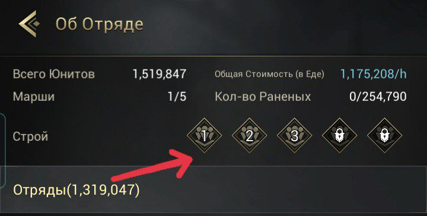
Дух зверя должен быть А-класса, подходящего тому типу войск, который качается (Полярный Ярл для пехоты, Пустынный охотник для наездников, Ловец шторма для стрелков), если его нет, берётся Инферно с максимальной прокачкой. Потом начинается подбор героев - здесь важно брать героев, которые усиливают именно прокачиваемый тип войск, а не юнитов или другой тип войск, это можно посмотреть тут (на первой картинке герой, которого можно взять в основной марш, на второй - герой, которого брать не нужно):


Есть эталонные наборы героев в марш для каждого типа войск:
Пехота - 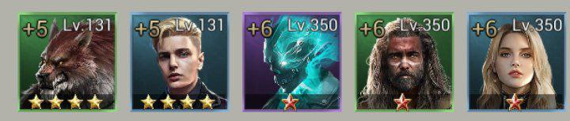 Леонардо, Мэтт, Седрик, Дональд и Алтея
Наездники - 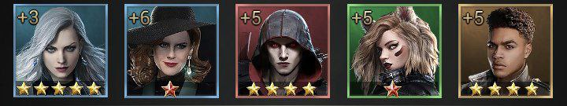 Шерил, Офелия, Кайн, Каролина и Бивис
Стрелки - 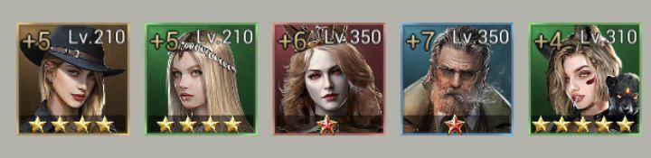 Барбара, Рильф, Виктория, Воланд и Аннализа
Если этих героев нет, то недостающих можно заменить героями с менишим количеством звёзд, но обязательно с усилением конкретного выбранного типа войск. Потом ползунком выбираем на максимум прокачиваемый тип войск максимального тира (с самой большой римской цифрой в нижней правой части кружка с картинкой-обозначением войска):
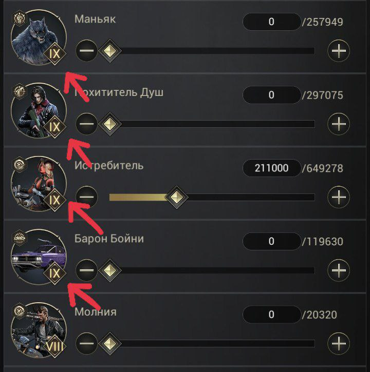 (показано красными стрелками)
Для сохранения выбранного марша нажимаем внизу кнопку "Сохранить строй". В следующий раз при отправке марша нужно нажать на кнопку с номером шаблона, за которым был сохранён марш, для его автоматической сборки, после чего можно сразу нажимать кнопку "в бой".
Самое важное в непосредственно прокачке войск - улучшать снаряжение, самоцветы, кристаллы, навыки святой, навыки владыки и исследовать технологии в академии, которые улучшают размер марша и атаку, защиту, оз выбранного типа юнитов. Примеры улучшения снаряжения, самоцветов, кристаллов и навыков святой (да, можно иметь минимальный уровень прокачки и у остальных типов войск, но никогда нельзя это делать в ущерб прокачке основного типа войск):
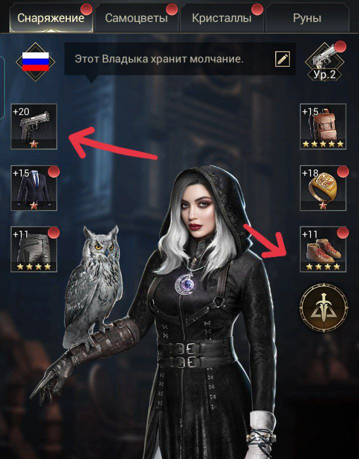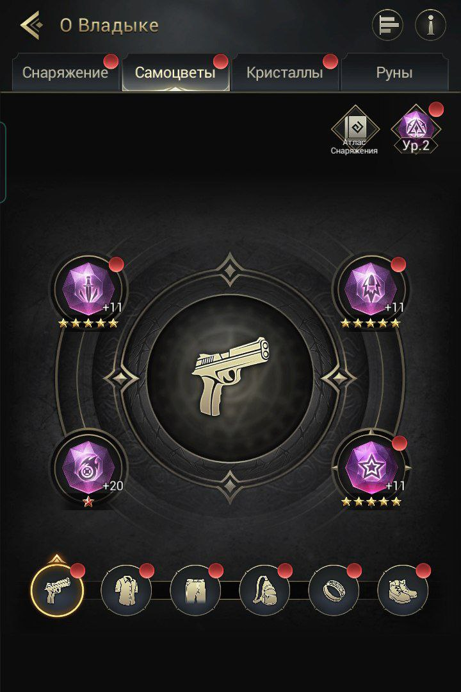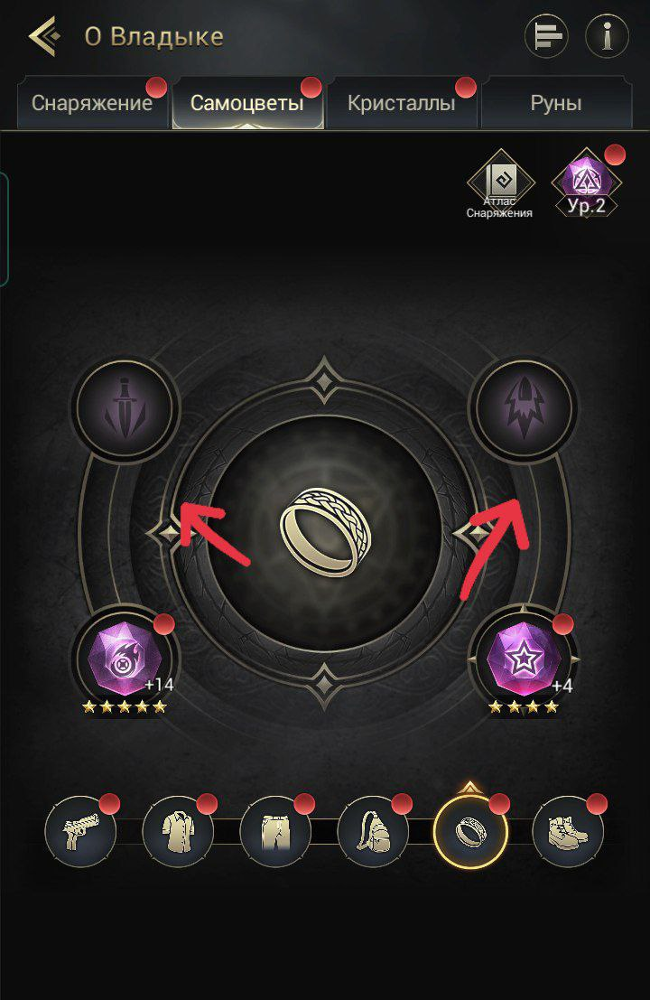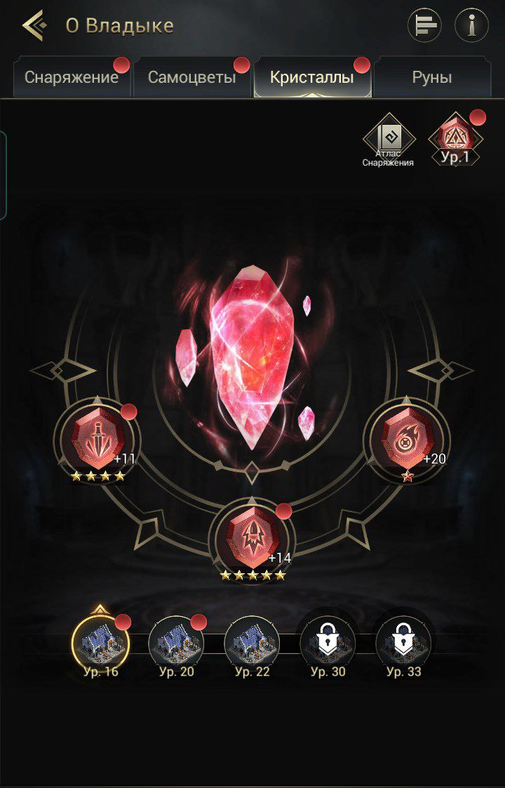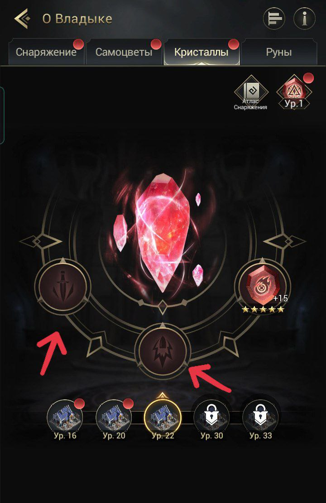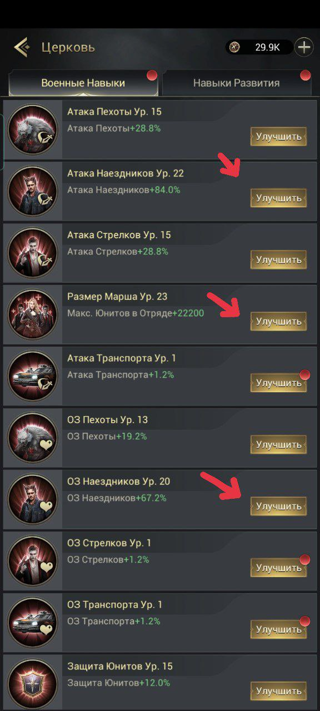
В навыках владыки при выборе ветки в ветке "Сражения" выбирается та, которая на основное прокачиваемое войско:
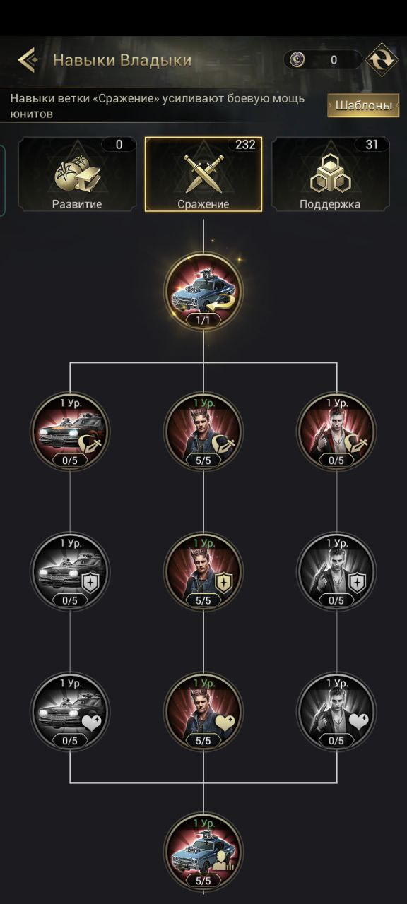
Прокачка героев
Герои делятся на четыре типа: герои для пехоты, для стрелков, для наездников и герои развития. На картинке указаны стрелками в том же порядке 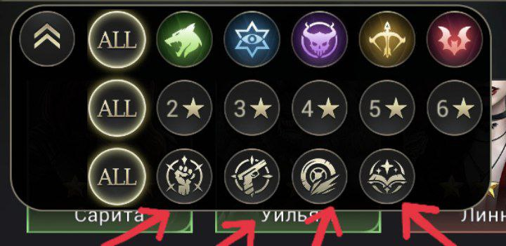Очень важный момент состоит в том, что принадлежность героев считается по тому, какому типу войск у них тактический манёвр (у развития это транспорт). Поэтому необходимо проверять, даёт ли этот герой усиление юнитам или именно типу войск, прежде, чем его прокачивать и ставить в марш
На картинках верхние стрелки указывают на принадлежность к типу войск, а нижние показывают, кого усиляют эти герои:
В первую очередь пробуждаются (через получаение фрагментов героя) герои, усиливающие именно тип юнитов, который качается, и герои развития, именно в таком порядке. Причём важно отметить, что всех героев нет необходимости улучшать до их максимального уровня, достаточно поднять их до уровня, на котором открыты все таланты.
Они указаны стрелками:
 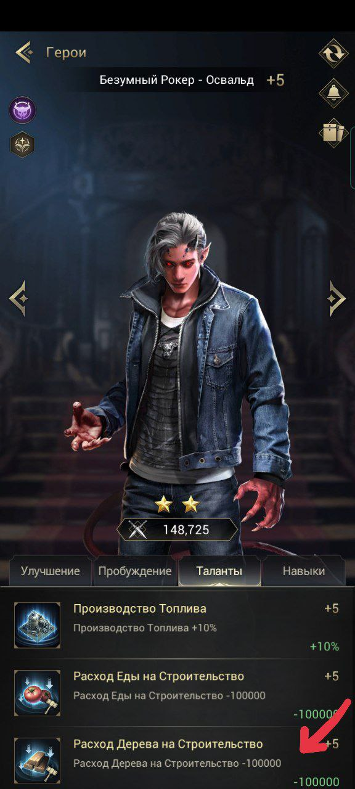
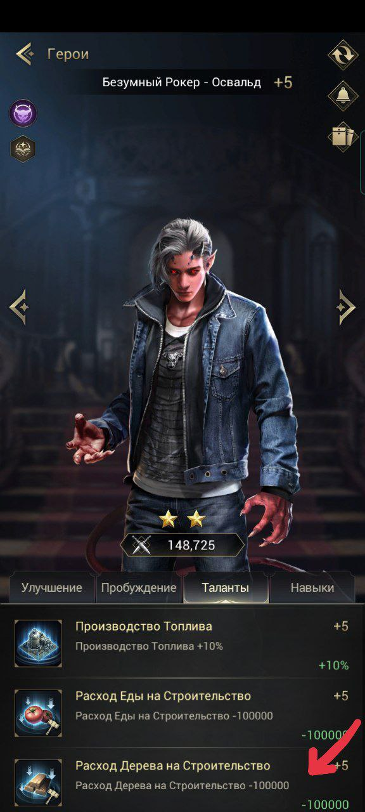Улучшать до максимального уровня нужно тех героев, которые используются на арене, в кампании и забытых землях. Но так как выгодно использовать героев с максимальным пробуждением и звездным уровнем,то обычно эти герои частично совпадают с теми, что стоят в марше. Фрагменты геров с максимальным пробуждением можно обменивать на очки героя, за которые можно купить фрагменты героя в таверне. (картинка рюкзака и картинка обмена в таверне)
Еженедельные ивенты
Для достижения высокого рейтинга в любом ивенте нужно копить абсолютно всё: сундуки, письма с призами, карточки героев, дары святой. На получение каждого вида вида материала есть свой ивент.У каждого типа войск есть герои, которые можно получить только через награды за ивенты (закрытие этапов и/или глобальный рейтинг), поэтому в эти ивенты нужно вкладываться усиленно в зависимости от качаемого типа войск.
Еженедельно с четверга по воскресенье проходит ивент "Зачистка", каждый день - свой этап со своими доступными героями. За него можно получить неплохие призы, не сильно напрягаясь, но очень многое зависит от удачи.
В субботу и воскресенье проходит "Атака титанов", источник очков - трата жёлтой энергии (в меньшей степени) и победа над квиллами (градация очков в зависимости от уровня квиллы), поэтому необходимо ходить на квилл уровнем 31+, чтобы и самому получать хорошие очки, и приносить их альянс.
В восресенье проходит "Осада Адского пламени". Остальные ивенты делятся по неделям.
Чётная неделя
Это неделя славного владыки, описание этого ивента есть отдельно. Вторник - "Нашествие падших". Нужно кидать подкрепление другим игрокам, не в ущерб себе, и на защиту крепости альянса, больше делать ничего не надо. Призы - ресурсы и ускорители.Четверг - "Нашествие падших". Нужно кидать подкрепление другим игрокам, не в ущерб себе, и на защиту крепости альянса, больше делать ничего не надо. Призы - ресурсы и ускорители. "Начертание рун". Ивент на получение осколков рун, редких и обычных усилитетей рун
Нечётная неделя
Понедельник - "Путь героя". Ивент на получение фрагментов героев: обмен карточек, наём в таверне, обмен очков героя в таверне на фрагменты героя. Наградой за рейтинг на этом ивенте являются карточки героя, в которых можно получить Викторию и АлтеюВторник - "Сбор провизии". Ивент на сбор ресурсов и кровавой яшмы. Наград за рейтинг нет. "Развитие крепости". Ивент на ускорение стройки, обучения юнитов и исследования технологий. Наградой за рейтинг на этом ивенте являются карточки героя, в которых можно получить Викторию и Алтею. "Дрессировка зверей". Ивент на улучшение Духов зверей и трату эссенции. Награда за рейнг - эссенция и энергия душ (которую можно обменять на духов зверей А-класса). "Оборона владений". Ивент, по котором надо уничтожать падших на кругах всем альянсом. Призы получают все, даже если игрок не участвовал.
Среда - "Усиление снаряжения". Ивент на получение осколков снаряжения, редких и обычных усилителей снаряжения и магической руды. Наградой за рейтинг на этом ивенте являются карточки героя, в которых можно получить Викторию и Алтею
Четверг - "Святая и кристаллы". Ивент на получение даров святой (их нужно открыть из рюкзака) и осколков кристаллов, редких и обычных усилителей кристаллов. Наградой за рейтинг на этом ивенте являются карточки героя, в которых можно получить Викторию и Алтею. "Оборона владений". Ивент, по котором надо уничтожать падших на кругах всем альянсом. Призы получают все, даже если игрок не участвовал. "Пополнение рядов". Ивент на улучшение и обучение войск. Наград за рейтинг нет.
Пятница - "Улучшение самоцветов". Ивент на получение осколков самоцветов, редких и обычных усилителей самоцветов, ещё больше очков даёт всё для ультрасамоцветов, которые можно получить только в магазине Славы за очки с арены - Славный бой. Суббота и воскресенье - "Алмазный мастер". Ивент на трату алмазов. Награда за рейтинг - фрагменты Виктории. "Специализация". В субботу необходимо выбрать, за какие действия будут зарабатываться очки (развитие крепости, улучшение снаряжение (именно улучшение всего (снаряжение, кристаллы, самоцветы, руны) и получение всего для снаряжения) или улучшение духов зверей), по умолчанию выбрано развитие крепости. В воскресенье набираются очки за выбранный тип деятельности. Награда за закрытие этапов и рейтинг - фрагменты Виктории
Славный владыка
Ивент, который длится целую неделю, награда за рейтинг во всём ивенте - карточки героев, где можно получить Каролину или Седрика. Каждый день - мини-ивент со своими заданиями и рейтингом очков. Глобальный рейтинг считается как сумма очков всех дней.Понедельник. Сбор ресурсов. Очки получаются за сбор ресурсов и кровавой яшмы
Вторник. Стройка и исследования. Очки получаются за увеличение силы зданий и исследований
Среда. Трата энергии. Очки получаются за трату жёлтой и зелёной энергии
Четверг. Обучение войск. Очки получаются за обучение и повышение войск
Пятница. Улучшение снаряжения. Очки получаются за увеличение силы снаряжения, самоцветов, кристаллови рун (через увеличение уровня и развитие звёздного уровня)
Суббота. Стройка, исследование и обучение войск. Очки получаются за увеличение силы зданий, исследований и обучение и повышение войск.
Всеобщий сбор
Этот ивент проходит раз в месяц и состоит в выполнении заданий, за которые получают очки, которые попадают в копилку альянса. В зависимости от того, какое количество очков набрано, а следовательно, сколько закрыто этапов, альянс получает награды, поэтому важно сделать как можно больший вклад каждому, чтобы получить все призы. Колтичество попыток, чтобы взять задания, ограничено, всего их 7, но можно докупить за алмазы ещё одну попытку.На данный момент в нашем альянсе есть такие правила на этот ивент: каждый должен набрать минимум 300 очков, если это не выполнется первый раз, игрок будет понижен до р1, после второго недобора игрока выгоняют перед получением призов с приглашением, чтобы он просто не получил призы; в идеальной ситуации каждый игрок должен набрат 1000 очков. Советы по выполнению заданий:
1. Не берите случайные заалния вообще, а задания ниже 100 очков до того момента, когда будут закрыты все этапы для получения призов. После можно брать небольшие задания для набора минимума, но помните, что попытки ограничены
2. Хорошо читайте условия закрытия задания. Например, в задании на получение материалов рун получать очки очень сложно, поэтому есть высокая верноятность, что задание вы не закроете и попытка пропадёт впустую
3. Достаточно легко выполнить задание на увеличение силы юнитов таким образом - берём начальное значение мощи игрока, вычитаем из него размер силы юнитов, на который нужно увеличить по заданию, запоминаем получившееся значение нападаем на максимального доступного падшего небольшими отрядами, которые его точно не убьют, получаем раненых юнитов, но не лечим их до того момента, пока мощь игрока не станет того значения, которое было всчитано. Как только мощь становится нужного значения, лечим юнитов в госпитале, после окончания лечения задание выполнено. НО следите за тем, чтобы госпиталь не переполнился, и проверяйте, хвататет ли вам ресурсов на лечение раненых. Второй подспособ - лечить раненых в госпителе обсидиана только за ускорители.
Обсидиановые войны
Ивент, проходящий каждую пятницу. Его суть состоит в захвате зданий и получении очков за это (количество получаемых игроком очков не зависит от количества юнитов в этом здании), дополнительные очки можно получить за здание, по которому проходит тележка обсидиана, которая начинает ходить через 15 минут после начала ивента и ходит с интервалом в 5 минут, маршрут её каждый раз случаен. Основные моменты:1. Запись. В среду проходит запись на обсидиановые войны. В четверг распределяются сопереники
2. Телепортация. Во время, но которое записался альянс, открывается телепорция на поле обсидиановых войн, от начала телепортации до начала всех активных действий ивента - 5 минут, но телепортироваться можно и позднее. Нашей стороной поля считается та, которой находится наша точка телепортации, если поделить поле горизонтально на 2 равные части
3. Захват зданий. Через 5 минут после начала обсидиановых войн открываются для атаки форты и тёмные порталы, ещё через 5 минут склады обсидиана, колоссы и фонтаны жизни
4. Тележка обсидиана. Она начинает ходить через 5 минут после открытия складов, колоссов и фонтанов, с интервалом в 5 минут. Альянс, по зданиям которого проходит тележка, получает доп. очки, как и игроки, чьи юниты есть в этом здании
5. Очки личные и альянса. Побеждает тот альянс, который наберёт очков юольше, чем соперник. Так же существуют награды за набранные личные очки для кадого игрока (они различаются для игроков проигравшего альянса и выигравшего), их можно посмотреть во вкладках "награда победителя" и "награда програвшего" в описании ивента
Перед каждыми обсидиановыми войнами у нас в альянсе проходит голосование на присутствие, исходя из этого голосования, составляется расстановка на конктретные обсидиановые войны, которой нужно сторого следовать, как и интструкции к ней
Игры престолов
Этот инвент проходит на чётных неделях в субботу и воскресенье. На каждом сервере в центре карты есть замок, который у русскоязычной части игроков называется град. Суть этого ивента заключается в захвате града на своём и чужих серверах. Всего в связке сражаются 4 сервера, включая наш, обычно каждый ивент серверы-соперники меняютсяВокруг града есть отличающаяся по цвету часть карты - чёрная земля (чз) для русскоязычных игроков, грязь (mud) для англоязычных и королевские владения официально. Игроки с других серверов могут атаковать град только из этой зоны, поэтому очень важной частью этого ивента является закрытие этой территории замками
На нашем сервере есть очередь, по которой альянсы берут град, поэтому есть 2 различных сценария участия в этом ивенте:
1. Наш альянс берёт град. В этом случае нужно слушаться команд лидера и р4. Ситуации могут происходить разные, поэтому скорость реагирования должна быть высокой, от этого может зависеть очень многое. Бывает ситуация, когда игрока из-за отсутствия реакции приходится выгонять из альянса, поэтому просим не обижаться - в таком случае сразу после выгона игроку отправляется приглашение на вступление обратно
2. Другой альянс берёт град. Наша задача - максимально заполнить своими замками чз и быть готовыми помочь альянсу, который берёт град, так, как он скажет. Для получения бонуса на обучение войск можно убивать свои низкоуровневые войска, нападая на град и башни, главное, не ставя героев и духов зверей, тиром и количеством не больше того, что разрешил альянс, берущий град
Правила заполнения чз: 1. Между замками должно быть расстояние в 1 клетку во все стороны. Если вам мешает так встать ресурсная плитка, квилла или падший, дождитесь, пока место не станет свободно (или сами очистите его себе). Исключение - закрытие дырок
2. Щит должен быть активирован. Исключение - убивание войск для бонуса, но в этом случае вы должны быть готовы вернуть войска, дождаться окончания ража и надеть его, как только поступит команда всем на чз надеть щиты
3. Нельзя покидать своё место на чз до окончания таймера захвата на граде или пока не найдётся игрок, который подменит, для этого необходимо написать в мировой чат и чат альянса, что есть необходимость вашей замены, и ждать. Исключение - приказ от р5 или р4 нашего альянса об оставлении чз
Доблестное завоевание
Этот ивент проходит на нечётных неделях в субботу и воскресенье. Во время него можно телепортироваться на чужие сервера (для этого тратятся точные и случайные телепорты) и зарабатывать очки, собирая ресурсы и убивая войска игроков не со своего сервера. Также во время этого ивента появляюся альмазные шахты, в которых можно собираь алмазы, за их сбор тоже дают очкиВсе раненые и убитые войска во время дз (доблестного завоевания) будут попадать в госпиталь события, где их можно вылечить только за ускорители, без траты ресурсов, но важно следить, что войска попадают в госпиталь события, потому что в игре уже были проблемы с этим. В таком случае необходимо писать о проблеме в поддержу и надеть щит во избежание потерь.
Как говорилось выше, очки зарабатываются за сбор ресурсов и алмазов на чужом сервере и убийство войск игроков не одного с вами сервера. Поэтому при нежелании воевать можно телепортироваться на чужой сервер и собирать под щитом ресурсы. Но ваше пребываение на чужом сервере ограничено 4 часами, после которого вас тепелортирует в случайное место на вашем
Если вы вообще не можете учавствовать в дз, наденьте щит на сутки перед его началом (13.00 по Мск), чтобы не потерять ресурсы.
Ферма
Начинает не хватать ресурсов для развития? Значит, пришло время завести ферму. Ферма - такой замок, который используется как донор ресурсов. Его нет необходимости прокачивать до уровня выше 18 (он необходим для участия в обсидиановых войнах), ему не надо сильно прокачивать статы и обучать войск больше, чем возможно вывести из замка всеми маршами. Этим замком не надо полноценно играть, достаточно участвовать в ивентах, где можно получить ресурсы, и ставить щит перед дз, чтобы эти ресурсы не потрерять. Так же ферму можно и по возможности нужно ставить на чз (можно даже только её).